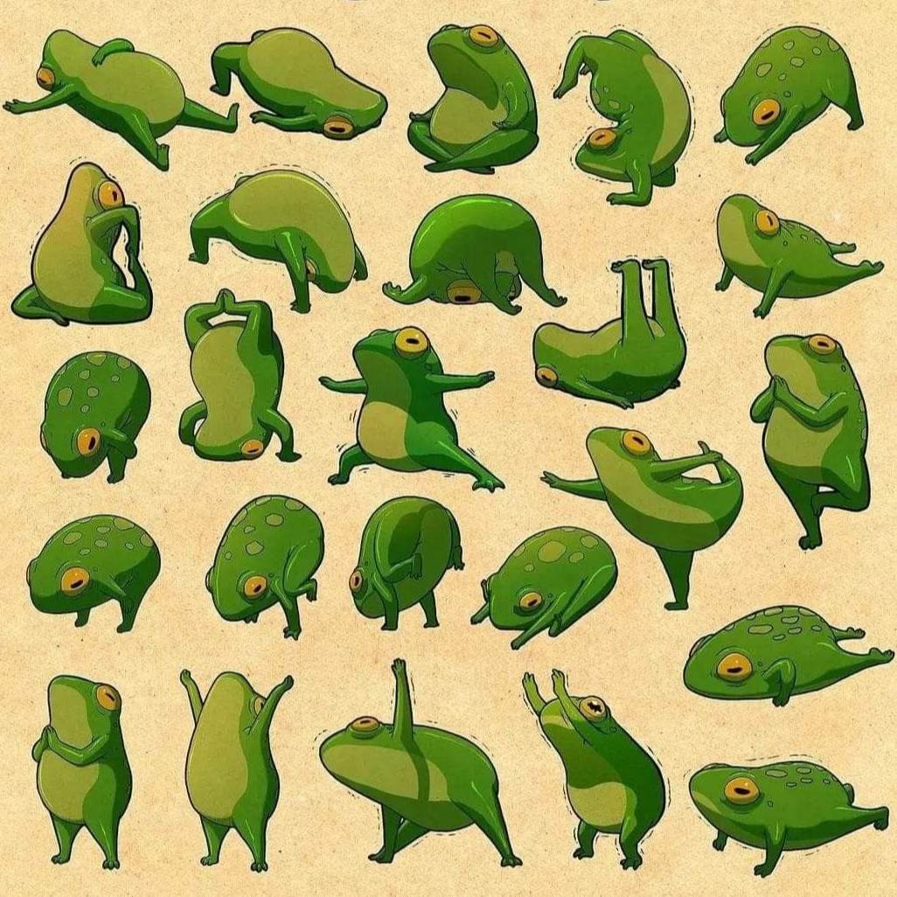

Зустрічайте жаб-йогів — експертів у мистецтві розтяжки. Вони демонструють різноманітні пози, що допомагають їм підтримувати фізичне та ментальне здоров'я. Це зображення ілюструє, як ці маленькі створіння насолоджуються життям у повній гармонії з природою.
Жаби — це група безхвостих земноводних, що належать до ряду Anura і налічують понад 7000 видів по всьому світу. Вони демонструють неймовірне різноманіття форм, розмірів та способів життя, що дозволяє їм займати екологічні ніші на всіх континентах, окрім Антарктиди. Жаби відіграють ключову роль в екосистемах. Вони є важливим індикатором здоров'я навколишнього середовища, оскільки їхня чутлива шкіра легко поглинає токсини. Крім того, вони є важливими хижаками, що контролюють популяції комах, і самі слугують їжею для інших тварин. Вивчення цих земноводних допомагає краще зрозуміти складні взаємозв'язки в природі та важливість збереження біорізноманіття.
Жаби не можуть ковтати з відкритими очима. Щоразу, коли вони ковтають, їм доводиться моргати. Це допомагає їм проштовхнути їжу в горло, використовуючи очні яблука, які занурюються всередину.